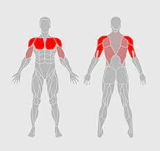
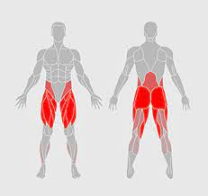
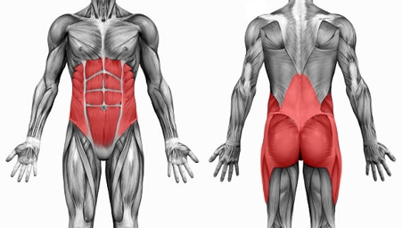

Ontdek ideale oefeningen voor verschillende spiergroepen
Bovenlichaam
Benchpress: Benchpress is een onmisbare borstoefening. De benchpress is een compound oefening, wat betekent dat je meerdere spieren tegelijk aanspreekt.
Je spreekt tijdens deze oefening ook je schouders en triceps aan, maar voornamelijk je borstspieren.
Incline bench press: Met de incline bench press train je de bovenkant van je borst. Bij deze oefening maak je gebruik van dumbells en heeft als voordeel meer spieractivatie,
doordat je met de dumbells balans probeert te houden.
Bent over row: Met de barbell bent over row train je de grote rugspier. Dit is ook een compound oefening, je spreekt namelijk ook je armen, schouders en buik aan.
Pull ups/Push ups: Dit zijn belangrijke compoundoefeningen die onmisbaar zijn. Met de pull ups train je voornamelijk je rug en daarbij je biceps.
Met de push ups train je je borstspieren, armspieren en je core. Deze oefeningen voer je met je lichaamsgewicht uit.
Seated shoulder press: Met deze oefening train je het voorste gedeelte van je schouder. De ideale oefening om grote schouders te krijgen. Hiermee train je ook je trapezium en tricep.
Lateral raises: Met deze oefening train je voornamelijk het middelste gedeelte van je schouders.
Onderlichaam
Barbell squat: Deze oefening is een van de meest effectieve compound oefeningen. Je traint in eerste instantie je hele onderlichaam en daarnaast je buikspieren.
Romanian deadlift: De romanian deadlift is een ook een compound oefening, waarbij je meerdere spieren in je onderlichaam en je rug traint.
Leg press: De leg press voer je uit op een machine. Met deze oefening train je een aantaal spieren van je onderlichaam.
Leg curl: Om de hamstrings in je bovenbenen te trainen is de leg curl oefening essentieel.
Leg extension: Deze oefening vor je uit op een machine. Hiermee train je de spieren aan de voorkant van je bovenbenen.
Core-stabiliteits oefeningen
Met de Core-stabiliteits oefeningen combineer je spierbalans en spierkracht in het midden van je lichaam. De core bestaat uit rug-, buik-, bil- en heupspieren.
Plank: Met de plank spreek je je gehele buikspieren aan. Hierbij moet je ook je balans zien te vinden.
Zijwaartse plank: Hiermee train je de schuine buikspieren en het is een belangrijke core oefening.
AB-wheel: Deze oefening is ook heel essentieel. Met de ab-wheel train je ook je rug-, schouder- en armspieren naast je core.
Specifieke buikspieren: Om je buikspieren goed te trainen heb je specifieke oefeningen zoals: russian twist, reverse crunch, bicycle, jackknife, sit up en seated flutter kick.